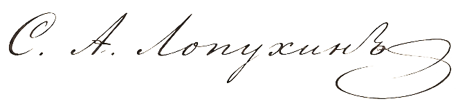
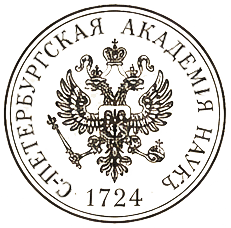

Вниманию уездного исправника Свербеева: Ознакомьтесь и проследите за исполнением.
корреспонденту Императорской Академии Наук,
в N‑ский уезд.
Милостивый государь!
Конференция Императорской Академии Наук, в очередном заседании своём рассматривая ведомость о корреспондентах Академии, в губерниях Империи учёные занятия производящих, усмотрела, что от Вас, со времени выдачи Вам рекомендательного письма, не поступило в Академию ни единого отчёта о произведённых занятиях, каковые отчёты корреспонденты Академии обязаны представлять установленным порядком.
Посему предлагается Вам немедленно представить в Конференцию отчёт о Ваших наблюдениях и собранных образцах.
В случае непредставления отчёта рекомендательное письмо, Вам выданное, будет, согласно заведённому порядку, почтено утратившим силу, о чём надлежащим образом уведомлены будут губернские власти.
Просим принять уверения в совершенном почтении.
За непременного секретаря Конференции,

Санкт‑Петербург
